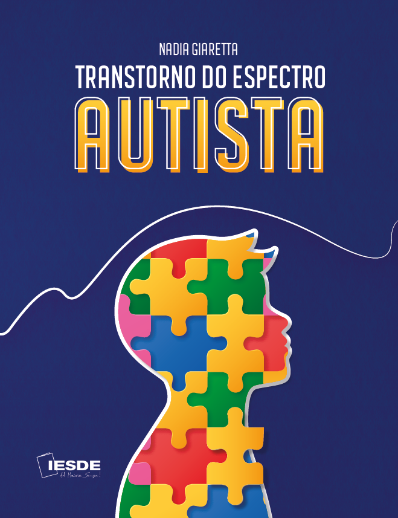

O Transtorno do Espectro Autista (TEA) é um distúrbio do neurodesenvolvimento, estudado há décadas pela ciência, em todas as partes do mundo, que mobiliza multiprofissionais engajados em explicar as lacunas e as incongruências ainda existentes sobre esse distúrbio.
Dados mundiais apontam um aumento considerável de casos diagnosticados, servindo como informações que contribuem para que o assunto deixe de ser apenas da área acadêmica e passe também para o domínio público.
Apesar da globalização e da abundância de informações que temos disponíveis ao acessar as redes, é de suma importância ressaltar que o TEA ainda é uma temática que necessita de um olhar diferenciado e específico, por conta da complexidade de suas características.
Avanços significativos ocorreram desde que, em 1943, o psiquiatra austríaco Leo Kanner apresentou estudos em que nesses ele descreveu o espectro tal como o reconhecemos nos dias atuais, utilizando, pela primeira vez, a terminologia autismo. Isso ocorreu após ele observar e acompanhar, ao longo de três décadas, crianças com idade entre 2 anos e 4 meses até 11 anos completos que apresentavam características de extremo isolamento social, maneirismos, comunicação não usual, dificuldade nas relações interpessoais, ausência ou uso não significativo da linguagem, ecolalias, comportamentos repetitivos, manuseio de objetos, rejeição de alimentos, rigidez no comportamento e aversão a mudanças, mas com uma memória mecânica.
Neste livro, propomos apresentar, discutir e refletir sobre todo o universo que permeia o TEA, visando a acrescentar e ampliar o conhecimento sobre o tema de maneira abrangente. Para tal, abordamos várias vertentes, sempre embasadas em estudos científicos, desde a cronologia do diagnóstico, passando por instrumentos de rastreio até a prática escolar, com o intuito de agregar positivamente essas discussões à formação profissional.
Todos os conteúdos foram selecionados e elaborados a fim de indicar novas formas de pensar e atuar, visando a buscar soluções para os problemas concretos.
No capítulo 1, apresentamos o seu histórico até a efetiva descoberta do transtorno, seu conceito e quais procedimentos devem ocorrer para diagnosticar, classificar e identificar os sinais típicos para alerta de TEA, ressaltando a importância do diagnóstico precoce.
No capítulo 2, tratamos dos comportamentos disruptivos, que fazem do TEA um transtorno único e com muitas perguntas latentes.
No capítulo 3, apontamos as áreas cerebrais a fim de identificar os deficits causados pelo TEA. Afunilando o tema, abordamos as funções executivas, nas quais se concentram os deficits mais aparentes do espectro.
No capítulo 4, fazemos uma ampla abordagem sobre o comportamento social e a comunicação, sendo esses aspectos de extrema relevância para a identificação do espectro.
No capítulo 5, abordamos os desafios da prática escolar e as atividades de vida diária e prática da criança com o transtorno do espectro autista. Também apresentamos: os instrumentos avaliativos e de rastreio, que consolidam as hipóteses apresentadas pela literatura, a prática parental e questões pertinentes às estratégias e integração escolar a fim de minimizar os deficits característicos encontrados no espectro, temas esses que podem apresentar implicações diretas no processo de ensino-aprendizagem.
Finalizando, é de suma importância ressaltar que o principal objetivo deste livro é abordar os conceitos que permeiam o TEA e suas implicações de maneira geral e abrangente. Sabemos o quão difícil é explanar todas as perspectivas sobre o TEA, todavia buscamos realizar um compilado das informações que são de maior relevância para o avanço do conhecimento sobre esse tema.
Boa leitura!
